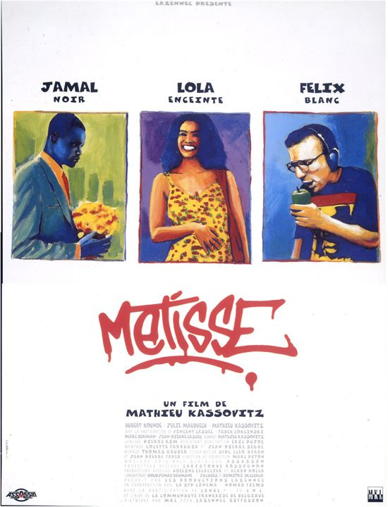
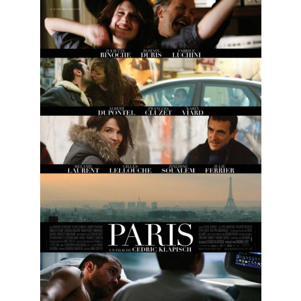

Arnaud Renoux
CEO of my own destiny
After 5 years at school, I got bored and started Le Wagon to become the CEO of my own destiny. My mission: Be happy every single day, travel a lot, and earn $$$.
See for yourselfMy favourite movies

|
La HaineLa Haine est un film français en noir et blanc sur la banlieue réalisé par Mathieu Kassovitz et sorti en 1995. Nommé 11 fois aux César, ce film en obtient trois dont celui du meilleur film en 1996. |
|  |
MétisseLola, metisse antillaise, a un amant blanc et un amant noir, et elle attend un enfant sans savoir qui est le pere. Felix, le Blanc, ne veut pas en entendre parler et Jamal, le Noir, laisse tomber ses etudes pour vivre avec elle. Lola subit des tests pour savoir qui est le pere de son enfant. |
|  |
ParisC'est l'histoire d'un Parisien qui est malade et qui se demande s'il va mourir. Son état lui donne un regard neuf et différent sur tous les gens qu'il croise. Le fait d'envisager la mort met soudainement en valeur la vie, la vie des autres et celle de la ville toute entière. Des maraîchers, une boulangère, une assistante sociale, un danseur, un architecte, un SDF, un prof de fac, une mannequin, un clandestin camerounais... Tous ces gens, que tout oppose, se retrouvent réunis dans cette ville et dans ce film. Vous pouvez penser qu'ils ne sont pas exceptionnels mais, pour chacun d'entre eux, leur vie est unique. Vous pouvez croire que leurs problèmes sont insignifiants, mais, pour eux, ce sont les plus importants du monde. |